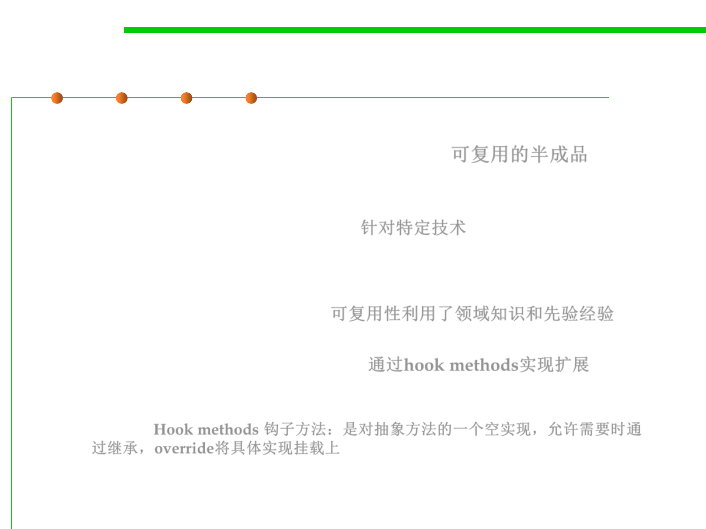

Frameworks
5.1 Metrics, Morphology and External Observations of Reusability
▪ A framework is a reusable partial application that can be
specialized to produce custom applications. 可复用的半成品
– Frameworks are targeted to particular technologies, such as data
processing or cellular communications, or to application domains, such as
user interfaces or real-time avionics. 针对特定技术
▪ The key benefits of frameworks are reusability and extensibility.
– Reusability leverages of the application domain knowledge and prior
effort of experienced developers 可复用性利用了领域知识和先验经验
– Extensibility is provided by hook methods, which are overwritten by the
application to extend the framework. 通过hook methods实现扩展
• Hook methods systematically decouple the interfaces and behaviors of an
application domain from the variations required by an application in a particular
context. Hook methods 钩子方法：是对抽象方法的一个空实现，允许需要时通
过继承，override将具体实现挂载上